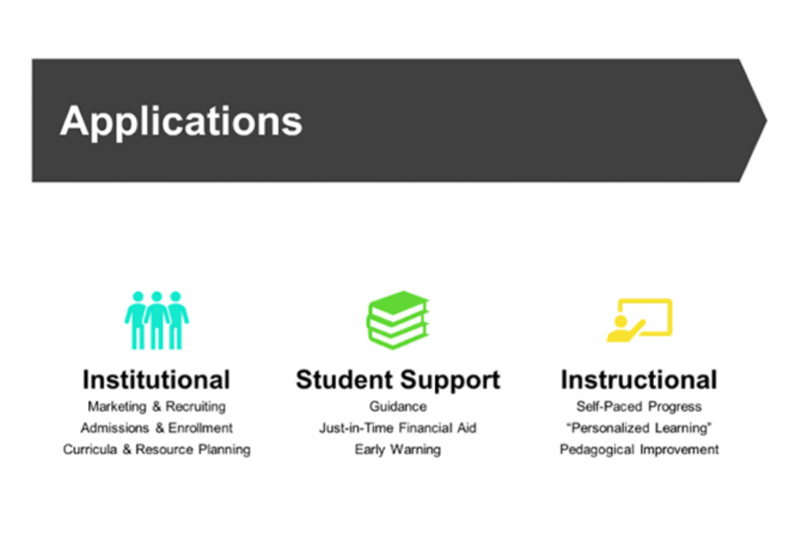
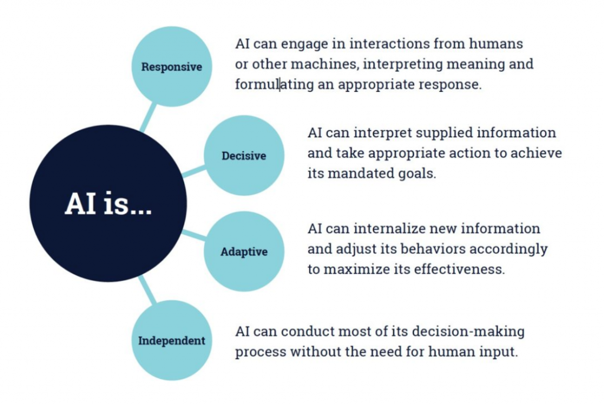
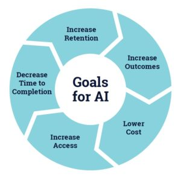

8.7c Tecnologias emergentes: inteligência artificial


8.7c.1 Focando nas affordances da IA para o ensino e a aprendizagem
A inteligência artificial (IA) constitui um tema complexo face à diversidade de questões que envolve relativamente à sua utilização na educação. A IA atravessa presentemente mais um ciclo de hype (expectativas inflacionadas) como panaceia para a educação, situando-se no pico das expectativas inflacionadas, embora este entusiasmo decorra essencialmente de aplicações bem-sucedidas noutras áreas, como nas finanças e no marketing. Adicionalmente, o termo "IA" tem sido crescentemente utilizado (de forma incorreta) como denominação genérica para qualquer atividade computacional.
Mesmo na educação, delineiam-se diferentes domínios de aplicação da IA. Zeide (2019) estabelece uma distinção muito útil entre aplicações institucionais, de apoio ao estudante e instrucionais (Figura 8.7c.2 abaixo).



Embora as aplicações de IA para fins institucionais ou de apoio ao estudante assumam relevância, este capítulo foca-se nas affordances pedagógicas das diferentes mídias e tecnologias (o que Zeide classifica como aplicações "instrucionais"). Focar-me-ei no papel da IA como mídia ou tecnologia para o ensino e a aprendizagem, nas suas affordances pedagógicas e nos seus pontos fortes e limitações nesta área.
A IA constitui um subconjunto da computação. Por conseguinte, todas as affordances gerais da computação na educação delineadas na Seção 5 deste capítulo aplicam-se à IA. Esta seção visa explorar o potencial adicional que a IA pode oferecer ao ensino e à aprendizagem. Tal implica focar no seu papel como mídia e não meramente como tecnologia geral de apoio ao ensino, o que pressupõe observar um contexto mais amplo do que apenas as dimensões computacionais da IA, nomeadamente a sua função pedagógica.
8.7c.2 O que é a inteligência artificial?
A definição original de inteligência artificial formulada por McCarthy (1956, citado em Russell & Norvig, 2010) refere que:
cada aspecto da aprendizagem ou qualquer outra característica da inteligência pode, em princípio, ser descrito com tanta precisão que uma máquina possa ser programada para o simular. Procurar-se-á identificar como fazer com que as máquinas utilizem a linguagem, formulem abstrações e conceitos, resolvam tipos de problemas atualmente reservados aos seres humanos e se aperfeiçoem a si mesmas.
Zawacki-Richter et al. (2019), numa revisão da literatura sobre IA no ensino superior, referem que os autores que definiram a inteligência artificial tenderam a caracterizá-la como:
sistemas informáticos inteligentes ou agentes inteligentes com características humanas, tais como a capacidade de memorizar conhecimentos, de perceber e manipular o seu ambiente de forma semelhante aos humanos e de compreender a linguagem natural humana.
Klutka et al. (2018) definem também a IA em termos do que esta consegue realizar no ensino superior (Figura 8.7c.3 abaixo):



Delineiam-se três requisitos computacionais básicos que distinguem a IA "moderna" de outras aplicações informáticas:
- acesso a volumes massivos de dados;
- poder computacional em grande escala para gerir e analisar esses dados;
- algoritmos potentes e adequados para a análise de dados.
8.7c.3 Porquê utilizar inteligência artificial para o ensino e a aprendizagem?
Identificam-se dois objetivos distintos para a utilização geral da inteligência artificial. O primeiro visa aumentar a eficiência de um sistema ou organização, essencialmente através da redução dos custos laborais, substituindo trabalhadores humanos por máquinas (automação). Na educação, em particular, o custo principal prende-se com professores e docentes. Os decisores políticos e os empreendedores encaram crescentemente a automação como via para mitigar os custos da educação.
O segundo objetivo foca no aumento da eficácia do ensino e da aprendizagem, visando obter melhores resultados de aprendizagem e maiores benefícios para custos equivalentes ou superiores. Sob esta perspectiva, a IA seria aplicada em articulação com os professores, prestando-lhes apoio.
Klutka et al. (2018) apresentam uma síntese do potencial da IA no ensino superior através da Figura 8.7c.4:


Tratam-se de objetivos compreensíveis, mas veremos nesta seção que, até à data, revestem-se de um caráter predominantemente aspiracional.
O foco orientador deste livro assenta no desenvolvimento dos conhecimentos e competências exigidos aos aprendizes na era digital. O teste decisivo para a inteligência artificial prende-se com a sua capacidade de apoiar o desenvolvimento de competências de nível superior.
8.7c.4 Affordances e exemplos de utilização da IA no ensino e na aprendizagem
Zawacki-Richter et al. (2019), numa revisão da literatura sobre a IA na educação, identificaram inicialmente 2.656 artigos científicos em inglês ou espanhol. Posteriormente, refinaram a lista eliminando duplicados, limitando a seleção a artigos publicados em revistas com arbitragem científica (peer-reviewed) entre 2007 e 2018, e excluindo textos que não abordavam especificamente o uso de IA na educação. Este processo resultou em 145 artigos analisados. Os autores classificaram depois estes artigos em diferentes categorias de utilização da IA na educação. Esta seção baseia-se nessa classificação. (Cumpre notar que, dos 145 artigos, apenas 92 se focavam no ensino ou no apoio ao estudante; os restantes abordavam a utilização institucional, como a identificação de estudantes em risco antes do ingresso).
O estudo de Zawacki-Richter proporciona uma visão sobre as principais formas de utilização da IA no ensino e na aprendizagem ao longo da década em análise, representando as suas "affordances". Apresentam-se a seguir três categorias instrucionais gerais identificadas no estudo, seguidas de exemplos específicos. (Excluí a categoria de perfil e previsão associada a questões administrativas como admissões, horários e sistemas de alerta precoce para estudantes em risco).
8.7c.4.1 Sistemas de tutoria inteligente (29 dos 92 artigos analisados por Zawacki-Richter et al.)
Os sistemas de tutoria inteligente:
- apresentam conteúdos letivos aos estudantes e apoiam-nos fornecendo feedback adaptativo e pistas para a resolução de problemas, identificando dificuldades ou erros na interação com os conteúdos ou exercícios;
- selecionam materiais de estudo de acordo com as necessidades dos estudantes, sugerindo leituras e exercícios específicos, bem como percursos personalizados;
- facilitam a colaboração entre os estudantes através de feedback automatizado, geração automática de tópicos para discussão e análise de processos.
8.7c.4.2 Avaliação (36 de 92)
A IA apoia a avaliação através de:
- correção e classificação automáticas;
- feedback, incluindo ferramentas direcionadas aos estudantes, como agentes inteligentes que fornecem orientações quando os alunos se deparam com dificuldades ou bloqueios nas tarefas;
- avaliação da compreensão, empenho e integridade académica dos estudantes.
8.7c.4.3 Sistemas adaptativos e personalização (27 de 92)
A IA viabiliza sistemas adaptativos e a personalização da aprendizagem ao:
- ensinar conteúdos das disciplinas, diagnosticando os pontos fortes e as lacunas no conhecimento do estudante e fornecendo feedback automatizado;
- recomendar conteúdos personalizados;
- apoiar os docentes no design de aprendizagem, sugerindo estratégias pedagógicas adequadas com base no desempenho dos estudantes;
- apoiar a representação do conhecimento através de mapas conceituais.
Klutka et al. (2018) identificaram várias utilizações de IA no ensino e aprendizagem em universidades nos EUA. O ECoach, desenvolvido na Universidade de Michigan, disponibiliza feedback formativo para turmas de dimensão elevada em disciplinas da área STEM. O sistema acompanha o progresso dos estudantes e sugere ações de forma personalizada. Outras aplicações descritas no relatório incluem a análise de sentimentos (recorrendo a expressões faciais dos estudantes para aferir o nível de atenção no estudo), um aplicativo para monitorizar o empenho em fóruns de discussão e a organização de erros comuns em exames em grupos, permitindo ao professor responder coletivamente em vez de individualmente.
8.7c.4.4 Chatbots
Um chatbot consiste numa programação concebida para simular a conversação de um ser humano através de interações de voz ou de texto (Rouse, 2018). Os chatbots constituem ferramentas utilizadas para automatizar as comunicações com os estudantes. Bayne (2014) descreve uma destas aplicações num MOOC com 90.000 inscritos. Grande parte das atividades dos estudantes decorria fora da plataforma Coursera, em mídias sociais. Os cinco docentes que lecionavam o MOOC encontravam-se ativos no Twitter, e o volume de publicações com a etiqueta do curso (#edcmooc) revelava-se muito elevado (trocaram-se cerca de 180.000 publicações na primeira edição). Concebeu-se um "Teacherbot" para monitorizar as publicações com a etiqueta do curso, utilizando palavras-chave para identificar dúvidas e acionar respostas pré-definidas, direcionando os estudantes para investigações mais específicas sobre os temas. Para uma revisão da investigação sobre chatbots na educação, ver Winkler e Söllner (2018).
8.7c.4.5 Avaliação automática de redações
Sistemas de inteligência artificial de processamento de linguagem natural (NLP) — frequentemente designados como motores de classificação automática de ensaios — funcionam atualmente como avaliadores principais ou secundários em exames padronizados em pelo menos 21 Estados nos EUA (Feathers, 2019). Conforme refere Feathers:
Os motores de classificação de ensaios não analisam a qualidade da escrita. São treinados com base em centenas de redações de exemplo para identificar padrões correlacionados com classificações humanas superiores ou inferiores. Preveem então a classificação que um avaliador humano atribuiria ao ensaio, com base nesses padrões.
Feathers alega, contudo, que investigações desenvolvidas por especialistas em psicometria e IA demonstram que estas ferramentas são propensas a um erro comum na inteligência artificial: o viés demográfico (ver Ongweso, 2019).
Lazendic et al. (2018) apresentam uma análise detalhada sobre o planejamento da avaliação por computador no ensino secundário na Austrália. Referem que:
É... de crucial importância reconhecer que os modelos de classificação humana desenvolvidos para cada proposta de escrita do NAPLAN, bem como a sua aplicação consistente, asseguram e mantêm a validade das avaliações de escrita. Consequentemente, a confiabilidade estatística dos resultados da classificação humana está relacionada com a validade da classificação da escrita no NAPLAN, constituindo a sua prova principal.
Por outras palavras, a avaliação deve basear-se em critérios humanos consistentes. No entanto, anunciou-se posteriormente (Hendry, 2018) que os ministros da educação da Austrália acordaram em não introduzir a avaliação automática de redações nos exames do NAPLAN, acolhendo as solicitações das associações de professores para rejeitar a proposta.
Perelman (2013) desenvolveu um programa informático chamado BABEL generator que agrupava termos e frases complexas gerando ensaios sem qualquer sentido ou nexo. Estes ensaios sem conteúdo obtiveram sistematicamente classificações elevadas, por vezes pontuações máximas, ao serem avaliados por diversos motores de correção automática. Ver também as análises de Mayfield (2013) e Parachuri (2013) sobre os desafios da correção automática de textos escritos.
Apesar da pressão para a adoção da avaliação automática de ensaios em exames padronizados, subsistem ainda muitas dúvidas em torno da maturidade desta tecnologia.
8.7c.5 Pontos fortes e limitações
Identificam-se vários critérios para avaliar o valor pedagógico das aplicações de IA no ensino e na aprendizagem:
- a aplicação assenta nos três requisitos centrais da IA "moderna": conjuntos massivos de dados, elevado poder computacional e algoritmos adequados?
- a aplicação demonstra benefícios pedagógicos evidentes em comparação com outras mídias e com a computação geral?
- a aplicação apoia o desenvolvimento das competências necessárias para a era digital?
- existem vieses não intencionais integrados nos algoritmos? Exibe discriminação face a determinadas categorias de pessoas?
- a aplicação revela-se ética face à privacidade de estudantes e professores e aos seus direitos numa sociedade democrática?
- os resultados gerados pela aplicação são explicáveis? Por exemplo, os professores conseguem compreender e explicar aos alunos de que forma a IA formulou determinada decisão ou classificação?
Estas questões são analisadas a seguir.
8.7c.5.1 Trata-se de uma aplicação de IA "moderna" no ensino e na aprendizagem?
A análise de Zawacki-Richter et al. e de outros artigos de referência indica que muito poucas aplicações pedagógicas de IA cumprem cumulativamente os critérios de dados massivos, poder computacional elevado e algoritmos avançados. Grande parte da tutoria inteligente na educação tradicional enquadra-se no que se pode classificar como "antiga" IA: não envolve processamento de dados em grande escala e os volumes de dados são reduzidos. Muitos dos artigos sobre tutoria inteligente e aprendizagem adaptativa tratam de aplicações informáticas convencionais.
Os sistemas de tutoria inteligente e a correção automática de testes de escolha múltipla existem desde o início da década de 1980. O exemplo mais próximo de aplicações de IA modernas prende-se com a avaliação automática de redações em exames de larga escala. No entanto, subsistem problemas nesta vertente, sendo necessário maior desenvolvimento para conferir validade a este processo.
A principal vantagem identificada por Klutka et al. (2018) assenta no fato de a IA viabilizar a escala de serviços de ensino superior a ritmos sem precedentes. Contudo, torna-se complexo enquadrar a IA moderna no sistema educativo formal atual, caracterizado por turmas de dimensões reduzidas e estruturas disciplinares que não geram a volumetria de dados exigida pela IA. Não se pode afirmar que a IA moderna tenha falhado no ensino; a verdade é que não tem sido testada de forma sistemática nas salas de aula convencionais.
Cenários de aplicação fora do sistema formal revelam-se mais viáveis, nomeadamente em MOOCs, na formação corporativa à escala global ou em universidades de ensino a distância com elevado volume de estudantes. O requisito de dados massivos sugere que o sistema educativo formal poderá sofrer disrupções se organizações externas (como grandes corporações tecnológicas) começarem a disponibilizar educação assente em IA moderna aos seus amplos mercados de utilizadores.
Contudo, a tecnologia encontra-se ainda distante desse cenário. De momento, os resultados práticos da aplicação da IA moderna no ensino e na aprendizagem são reduzidos.
Pressupondo, para fins de análise, que a designação de IA se aplica genericamente às iniciativas descritas, de que forma estas respondem aos restantes critérios?
8.7c.5.2 Apoiam o desenvolvimento das competências exigidas na era digital?
Este aspecto não se verifica na maioria das aplicações de IA pedagógicas atuais. Estas encontram-se predominantemente focadas na transmissão de conteúdos e em testes de compreensão e memorização. Zawacki-Richter et al. observam que grande parte dos desenvolvimentos de IA na educação é concebida por cientistas da computação e não por educadores. Consequentemente, tendem a aplicar modelos de aprendizagem decalcados do funcionamento dos computadores e das redes informáticas. Isto resulta na adoção de modelos pedagógicos de base behaviorista: apresentação de informação, realização de testes e fornecimento de feedback. Lynch (2017) argumenta que:
Para que a IA beneficie a educação, torna-se necessário estreitar a ligação entre os programadores de IA e os especialistas das ciências da aprendizagem. De outro modo, a IA limitar-se-á a "descobrir" novas formas de ensinar de forma deficiente e a perpetuar conceitos incorretos sobre o ensino e a aprendizagem.
A compreensão constitui uma competência de base relevante, mas a IA não tem apoiado o desenvolvimento de competências de nível superior como o pensamento crítico, a resolução de problemas, a criatividade e a gestão do conhecimento. Klutka et al. (2018) defendem que a IA pode assumir tarefas rotineiras de docentes e administradores, libertando os profissionais para se focarem na resolução de problemas complexos e na ligação interpessoal com os estudantes. Isto reforça a perspectiva de que a função do docente deve evoluir no sentido do desenvolvimento de competências, distanciando-se da mera transmissão e verificação de conteúdos (tarefas que a tecnologia executa com eficiência). A IA, nesta lógica, funciona como suporte ao professor, não o substituindo. Exige-se, contudo, que os docentes alterem as suas metodologias sob pena de se tornarem redundantes.
8.7c.5.3 Existe viés não intencional nos algoritmos?
Pode argumentar-se que a IA se limita a replicar e a consolidar os vieses preexistentes no sistema. O problema reside na dificuldade de detectar esse viés nos algoritmos, correndo-se o risco de a IA ampliar essas distorções. Trata-se de uma questão com relevância acrescida nas aplicações institucionais, mas o viés algorítmico pode discriminar estudantes também no contexto instrucional, sobretudo no âmbito da avaliação automática.
8.7c.5.4 A aplicação revela-se ética?
Registram-se diversos desafios éticos associados à utilização de IA na educação, decorrentes sobretudo da falta de transparência dos programas e dos pressupostos incorporados nos algoritmos. A revisão da literatura realizada por Zawacki-Richter et al. (2019) concluiu:
...um resultado marcante desta revisão prende-se com a escassez de reflexão crítica sobre as implicações pedagógicas e éticas, bem como sobre os riscos associados à implementação de aplicações de IA no ensino superior.
Que dados são recolhidos, a quem pertence o seu controle, como são interpretados e de que forma serão utilizados? Torna-se indispensável definir políticas de proteção de dados de estudantes e professores (ver, por exemplo, o documento do Departamento de Educação dos EUA Políticas de Dados de Estudantes), garantindo o envolvimento de docentes e alunos na sua elaboração.
8.7c.5.5 Os resultados são explicáveis?
Um dos principais desafios da IA reside na sua opacidade (caixa preta). Como se justificou esta classificação? Por que razão me é sugerida esta leitura e não outra? Porque é que a minha resposta é considerada incorreta? Lynch (2017) argumenta que grande parte dos dados recolhidos sobre a aprendizagem dos alunos é indireta, pouco autêntica, desprovida de validação pedagógica demonstrável e baseada em horizontes temporais curtos para refletir a aprendizagem real:
"Os exemplos atuais de IA na educação baseiam-se frequentemente... em indicadores pouco representativos da aprendizagem, priorizando dados fáceis de recolher em detrimento daqueles pedagogicamente significativos."
8.7c.6 Conclusões
8.7c.6.1 O distanciamento entre o ideal e a realidade
Nas aplicações práticas de IA para o ensino e a aprendizagem, o ideal proposto encontra-se ainda distante da realidade. Metodologias eficazes em áreas como as finanças, marketing ou astronomia não se transferem linearmente para os contextos educativos. Constata-se uma escassez de exemplos robustos de aplicação de IA no ensino em comparação com as realidades tangíveis dos jogos sérios ou da realidade virtual. Os resultados da aplicação de IA à pedagogia revelam-se presentemente limitados.
Isto decorre da complexidade de aplicar a IA moderna à escala de um sistema caracterizado pela fragmentação de turmas, disciplinas e instituições de dimensões reduzidas. A viabilização da IA moderna exigiria uma reestruturação organizacional do ensino.
O processo de aprendizagem envolve uma dimensão afetiva e emocional significativa. Os estudantes registram melhor desempenho quando percebem o acompanhamento e interesse do professor. Adicionalmente, valorizam o tratamento individualizado e a autonomia sobre o seu percurso de aprendizagem. Embora a nível estatístico o comportamento de grandes grupos seja previsível, cada estudante constitui um indivíduo que responde de forma única às situações. A aprendizagem constitui uma atividade complexa na qual apenas uma parcela menor do processo pode ser efetivamente automatizada. Trata-se de uma dinâmica de interação humana que beneficia das relações interpessoais e sociais. Esta dimensão relacional pode ser desenvolvida tanto on-line como presencialmente, o que pressupõe utilizar a tecnologia para apoiar a comunicação, além de transmitir e testar conteúdos.
8.7c.6.2 Desajuste face aos objetivos pedagógicos
A inteligência artificial não atingiu o patamar de maturidade que lhe permita apoiar competências de nível superior ou as abordagens necessárias para o efeito, objetivos que outras mídias como simulações, jogos e realidade virtual conseguem já alcançar.
Adicionalmente, os programadores de IA têm ignorado frequentemente o caráter construtivista e evolutivo da aprendizagem, impondo modelos behavioristas e epistemologias objetivistas. Contudo, o desenvolvimento de competências para a era digital exige abordagens pedagógicas de cariz mais construtivista. Carece-se de evidências práticas que demonstrem a capacidade da IA em apoiar tais metodologias de ensino.
8.7c.6.3 Fatores econômicos subjacentes
Os defensores da IA argumentam que a tecnologia não visa substituir os professores, mas sim simplificar o seu trabalho. Contudo, cumpre analisar esta afirmação com prudência. O motor principal de muitas destas iniciativas prende-se com a redução de custos, o que na educação pressupõe a redução do número de docentes. Em contrapartida, as análises de evolução social indicam que uma sociedade com forte automação exigirá maior enfoque nos aspectos emocionais e afetivos humanos, tornando a função docente ainda mais relevante.
Outro desafio prende-se com a repetição cíclica de argumentos e expectativas que remontam à década de 1980. Na altura, alocaram-se recursos significativos à investigação em IA na educação sem que se registrasse o correspondente retorno prático.
Verificaram-se avanços relevantes desde então, nomeadamente no reconhecimento de padrões, análise de grandes conjuntos de dados e formulação de decisões em limites estruturados. O desafio consiste em delimitar exatamente os contextos de utilidade da IA e as áreas onde esta não se revela eficaz. A educação constitui um contexto complexo para a aplicação de sistemas de IA.
8.7c.6.4 Definição do papel da IA no ensino e na aprendizagem
Existe espaço para a aplicação útil da IA na educação, desde que se estabeleça um diálogo contínuo entre programadores e educadores à medida que a tecnologia evolui. Isto exige clareza quanto aos objetivos de aplicação e atenção às consequências não intencionais.
Na educação, a IA constitui um potencial por desenvolver. É provável que aplicações inovadoras venham a surgir fora do sistema universitário convencional, impulsionadas por organizações com acesso a grandes repositórios de dados que tornam estas iniciativas viáveis e escaláveis (como LinkedIn, Amazon ou Coursera). Este cenário representará um desafio para os sistemas públicos de ensino. Coloca-se então a questão de identificar qual o modelo mais adequado para salvaguardar o percurso do indivíduo: corporações multinacionais utilizando IA ou um sistema de ensino público no qual os docentes utilizam a IA como ferramenta de suporte.
Trata-se de decidir se a tecnologia deve visar a substituição dos professores através da automação ou se deve ser aplicada para capacitar docentes e estudantes. Sobretudo, quem deve controlar a IA na educação: educadores, estudantes, cientistas da computação ou corporações privadas? Delineiam-se questões éticas e sociais profundas sobre o futuro da nossa sociedade.
Referências
Bayne, S. (2014) Teacherbot: interventions in automated teaching Teaching in Higher Education, Vol. 20. No.4
Feathers, T. (2019) Flawed Algorithms Are Grading Millions of Students’ Essays, Motherboard: Tech by Vice, 20 August
Hendry, J. (2018) Govts dump NAPLAN robo marking plans itnews, 30 January
Klutka, J. et al. (2018) Artificial Intelligence in Higher Education: Current Uses and Future Applications Louisville Ky: Learning House
Lazandic, G., Justus, J.-A., and Rabinowitz, S. (2018) NAPLAN Online Automated Scoring Research Program: Research Report, Canberra, Australia: Australian Curriculum, Assessment and Reporting Authority
Lynch, J. (2017) How AI will destroy education, buZZrobot, 13 November
Mayfield, E. (2013) Six ways the edX Announcement Gets Automated Essay Grading Wrong, e-Literate, April 8
Ongweso jr. E. (2019) Racial Bias in AI Isn’t Getting Better and Neither Are Researchers’ Excuses Motherboard: Tech by Vice, July 29
Parachuri, V. (2013) On the automated scoring of essays and the lessons learned along the way, vicparachuri.com, July 31
Perelman, L. (2013) Critique of Mark D. Shermis & Ben Hamner, Contrasting State-of-the-Art Automated Scoring of Essays: Analysis, Journal of Writing Assessment, Vol. 6, No.1
Rouse, M. (2019) What is chatbot? Techtarget Network Customer Experience, 5 January
Russell, S. and Norvig, P. (2010) Artificial Intelligence – A Modern Approach New Jersey: Pearson Education
Winkler, R. & Söllner, M. (2018): Unleashing the Potential of Chatbots in Education: A State-Of-The-Art Analysis. Academy of Management Annual Meeting (AOM) Chicago: Illinois
Zawacki-Richter, O. et al. (2019) Systematic review of research on artificial intelligence applications in higher education – where are the educators? International Journal of Technology in Higher Education
Zeide, E. (2019) Artificial Intelligence in Higher Education: Applications, Promise and Perils, and Ethical Questions EDUCAUSE Review, Vol. 54, No. 3, August 26
Atividade 8.7.c Inteligência artificial
- Qual a sua opinião sobre a IA no ensino e na aprendizagem? Trata-se de uma questão demasiado complexa que pode ignorar sem reservas nas suas práticas de docência? Ou considera necessário dispor de informação sobre o seu potencial e as suas limitações?
- Concorda com os três requisitos mínimos da IA moderna: conjuntos massivos de dados, poder de processamento elevado e algoritmos potentes? Identifica outras aplicações de IA que não dependam destes critérios?
- Consegue conceber contextos de ensino que possam gerar volumes de dados significativos, mesmo em turmas de dimensão reduzida (por exemplo, 30 alunos)?
- Quais outras competências, além da compreensão, a IA poderia apoiar? De que forma o realizaria?
Clique no podcast abaixo para feedback e perspectivas pessoais sobre o uso de inteligência artificial no ensino:
Um elemento de áudio foi excluído desta versão do texto. Você pode ouvi-lo on-line aqui: https://pressbooks.bccampus.ca/teachinginadigitalagev2/?p=1597